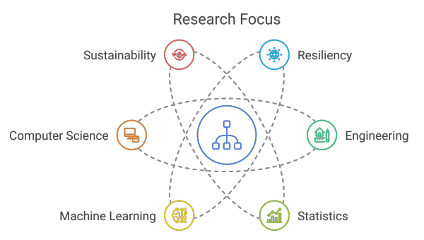

Senior Lecturer in Computer Science — Data Science & AI
Academic Lead, Centre for Environmental Intelligence · University of Exeter, UK
Dr. Fayaz is a Senior Lecturer in Computer Science (Data Science and Artificial Intelligence) at the University of Exeter, UK. His research lies at the intersection of machine learning, probabilistic modelling, and decision science, with a focus on spatiotemporal representation learning and inference in complex systems. He develops computational frameworks for risk quantification, early warning, and sequential decision-making with particular emphasis on extreme events—high-impact low-probability and high-probability long-horizon risks—in natural hazards, environmental systems, and critical infrastructure.
His methodological expertise includes deep learning for structured data (graphs and time series), physics-informed machine learning, reinforcement learning, Bayesian inference, and explainable AI, with an emphasis on scalable and interpretable models for safety-critical systems.
Currently, Dr. Fayaz is an Academic Lead for the Centre for Environmental Intelligence at the University of Exeter. He also serves on the editorial boards of the International Journal of Disaster Risk Reduction, Frontiers in Earth Science, and Smart and Sustainable Built Environment.
Computational methods applied to risk, safety, and decision-making problems in complex physical systems.

April 2021 – January 2022
University College London, UK
January 2018 – June 2021
University of California, Irvine, USA
September 2016 – March 2018
University of California, Irvine, USA
Kathleen Booth Building
University of Exeter
Exeter, UK, EX4 4RN
Connect